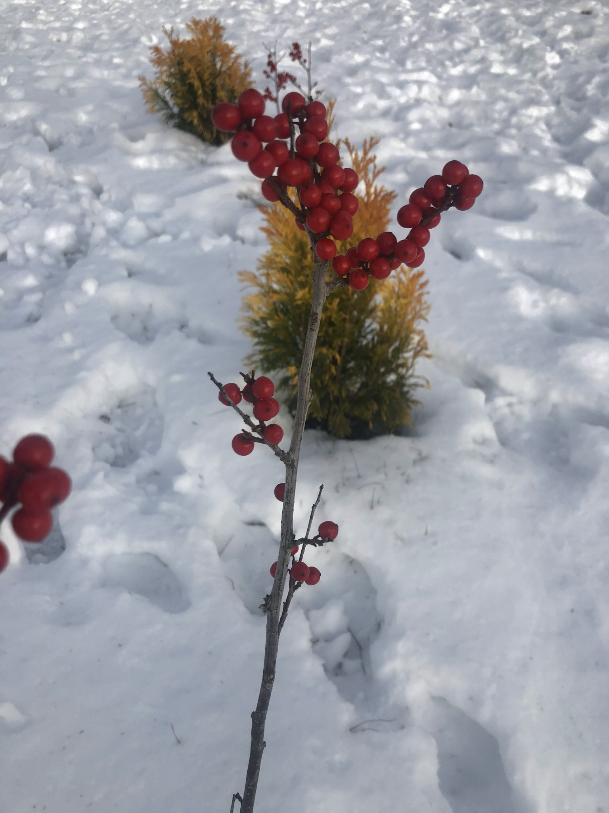
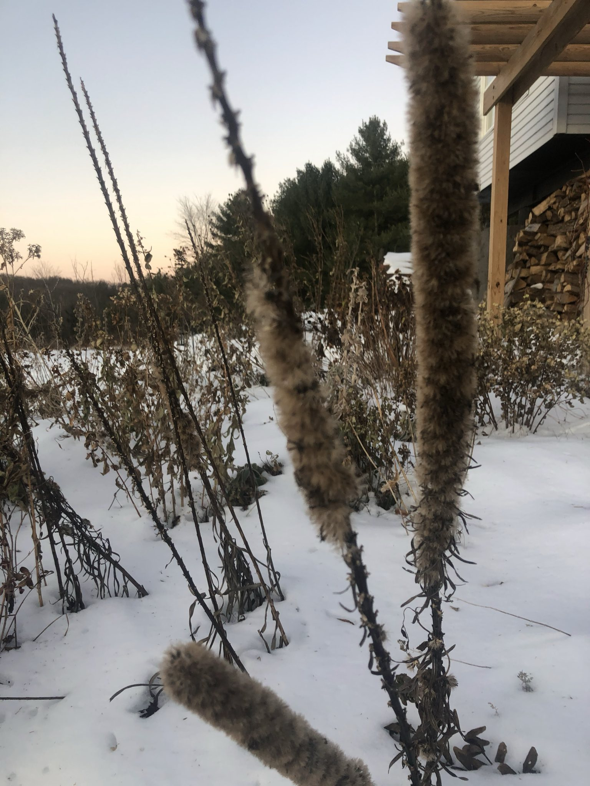
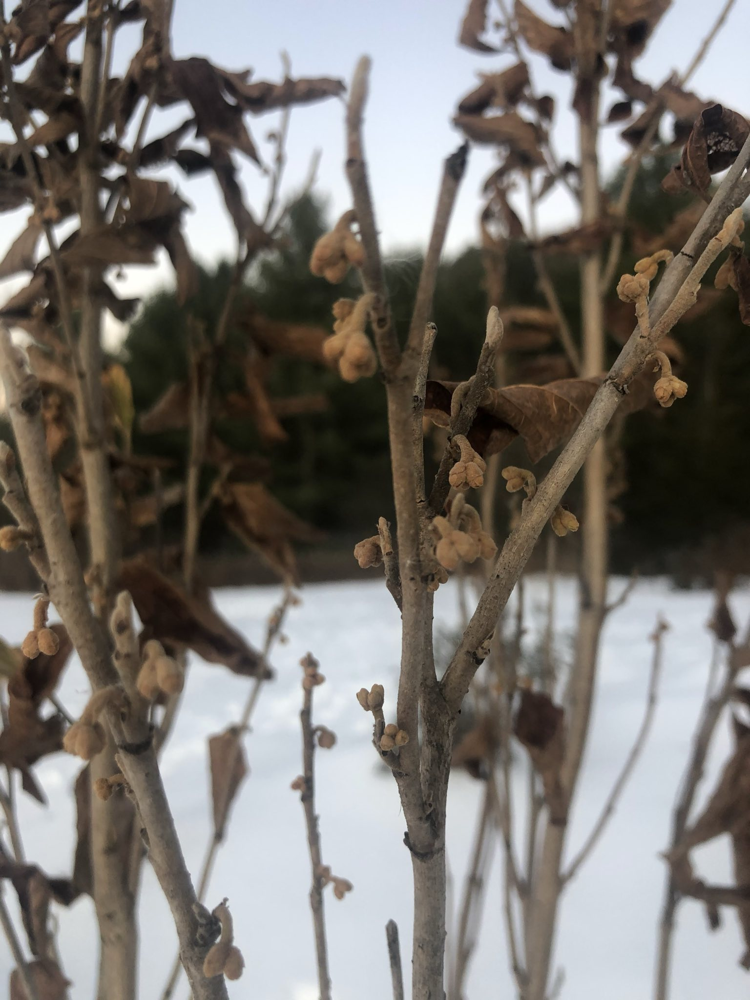
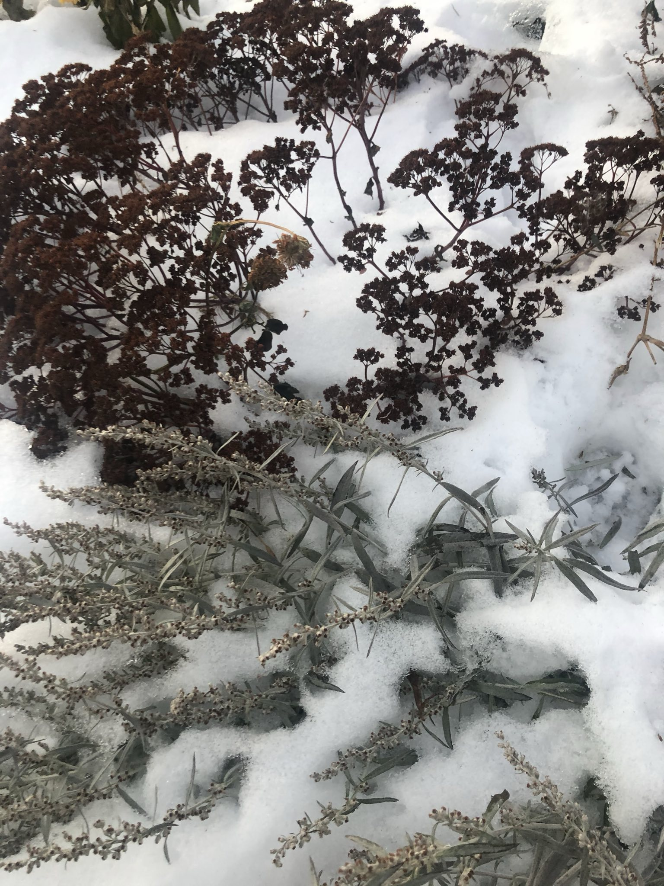
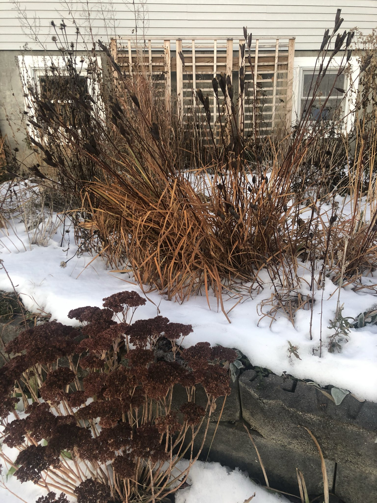

Winter 2019
Winter Features

Winter is a tough time for wildlife in Vermont, leaving our perennials standing helps provide much needed food and shelter. My inaction also helps me remember blooms now past, their general location, and envision the future.
Leaving the garden remains frozen in the snow invites deer and overwintering birds to feast (as well as a few other visitors!) Scattered winterberries, broken echinacea seed heads, and stripped kale plants are evidence that the garden has provided sustenance. Birds balance in our thick ornamental grasses traveling to our nine barks and arborvitae and back into the woods, perhaps a brief respite from cold winds.
Being lazy at the end of the gardening season has been so beneficial! I didn’t have a hack down penstemon, phlox, liatris, and haul their remains to a dumping pile at the edge of the wood. No sore wrists or back at the end of season for me (at least not due to garden clean-up.)
Walking through the winter garden, I make mental notes of what to divide, what to move, plants to add, and plants that we much let go. A winter blooming plant like Witch Hazel is great for insects, deer, and squirrels while also being quite visually appealing. Grapes still clinging on woody vines and the inviting greenery of arborvitae stand out in a field of white.
Walking through the white canvas, envisioning the next garden I can see our house encircled with native plants. I can hear the sound of returning birds and bees. I am ready to add to this pollinator paradise— I’m ready. When is it going to be spring?




Filed in the garden journal · Winter 2019